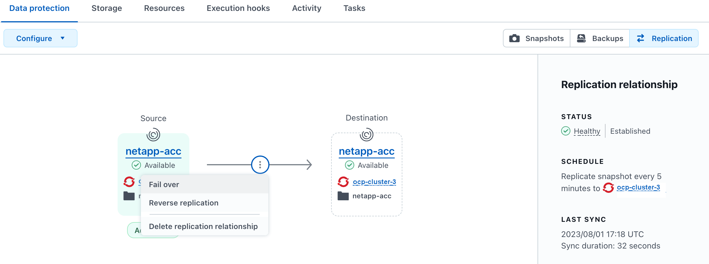

版本資訊
版本資訊
使用 Astra Control Center 保護 Astra Control Center
 建議變更
建議變更
為了更有效地確保在執行 Astra Control Center 的 Kubernetes 叢集上的恢復能力、請保護 Astra Control Center 應用程式本身。您可以使用次要 Astra Control Center 執行個體來備份和還原 Astra Control Center 、或是在基礎儲存設備使用 ONTAP 時使用 Astra 複寫。
在這些案例中、 Astra Control Center 的第二個執行個體會部署並設定在不同的故障網域中、並在不同於主要 Astra Control Center 執行個體的第二個 Kubernetes 叢集上執行。第二個 Astra Control 執行個體用於備份主要 Astra Control Center 執行個體、並可能還原主要 Astra Control Center 執行個體。還原或複寫的 Astra Control Center 執行個體將繼續為應用程式叢集應用程式提供應用程式資料管理、並還原這些應用程式的備份和快照存取能力。
在設定 Astra Control Center 的保護方案之前、請務必先執行下列步驟：
-
* 執行主要 Astra Control Center 執行個體 * 的 Kubernetes 叢集：此叢集主控管理應用程式叢集的主要 Astra Control Center 執行個體。
-
* 第二個 Kubernetes 叢集、其與執行次要 Astra Control Center 執行個體的主叢集具有相同的 Kubernetes 發佈類型 * ：此叢集主控管理主要 Astra Control Center 執行個體的 Astra Control Center 執行個體。
-
* 第三個 Kubernetes 叢集、其 Kubernetes 發佈類型與主叢集相同 * ：此叢集將主控已還原或複寫的 Astra Control Center 執行個體。它必須具有目前部署在主要主機上的相同 Astra Control Center 命名空間。例如、如果 Astra Control Center 部署在命名空間中
netapp-acc在來源叢集上、命名空間netapp-acc目的地 Kubernetes 叢集上的任何應用程式都必須可用、且不得使用。 -
* 相容 S3 的儲存庫 * ：每個 Astra Control Center 執行個體都有可存取的 S3 相容物件儲存貯體。
-
* 已設定的負載平衡器 * ：負載平衡器為 Astra 提供 IP 位址、而且必須與應用程式叢集和兩個 S3 儲存區建立網路連線。
-
* 叢集符合 Astra Control Center 的需求 * ： Astra Control Center 保護所使用的每個叢集都符合 "Astra Control Center 的一般需求"。

在此範例組態中、會顯示下列內容：
-
* 執行主要 Astra Control Center 執行個體 * 的 Kubernetes 叢集：
-
OpenShift 叢集：
ocp-cluster-1 -
Astra Control Center 主要執行個體：
ocp-cluster-1.company.com -
此叢集可管理應用程式叢集。
-
-
* 第二個 Kubernetes 叢集與執行次要 Astra Control Center 執行個體的主要伺服器具有相同的 Kubernetes 發佈類型 * ：
-
OpenShift 叢集：
ocp-cluster-2 -
Astra Control Center 次要執行個體：
ocp-cluster-2.company.com -
此叢集將用於備份主要 Astra Control Center 執行個體、或將複寫設定至不同的叢集（在此範例中為
ocp-cluster-3叢集）。
-
-
* 第三個 Kubernetes 叢集、其 Kubernetes 發佈類型與用於還原作業的主要叢集相同 * ：
-
OpenShift 叢集：
ocp-cluster-3 -
Astra Control Center 第三個執行個體：
ocp-cluster-3.company.com -
此叢集將用於 Astra Control Center 還原或複寫容錯移轉。
-

|
理想情況下、應用程式叢集應位於上述影像中 Kubernetes 和 rancher 叢集所描述的三個 Astra Control Center 叢集之外。 |
圖中未說明：
-
所有叢集都安裝 ONTAP 後端與 Astra Trident 或 Astra Control Provisioner 。
-
在此組態中、 OpenShift 叢集使用 MetalLB 做為負載平衡器。
-
Snapshot 控制器和 Volume SnapshotClass 也會安裝在所有叢集上、如中所述 "先決條件"。
步驟 1 選項：備份與還原 Astra Control Center
本程序說明使用備份與還原將 Astra Control Center 還原至新叢集的必要步驟。
在此範例中、 Astra Control Center 一律安裝在 netapp-acc 命名空間和運算子會安裝在 netapp-acc-operator 命名空間。
|
|
雖然未說明、 Astra Control Center 營運者也可以部署在與 Astra CR 相同的命名空間中。 |
-
您已在叢集上安裝主要 Astra Control Center 。
-
您已在不同的叢集上安裝次要 Astra Control Center 。
-
從次要 Astra Control Center 執行個體（在上執行）管理主要 Astra Control Center 應用程式和目的地叢集
ocp-cluster-2叢集）：-
登入次要 Astra Control Center 執行個體。
-
"新增主要 Astra Control Center 叢集" (
ocp-cluster-1）。 -
"新增目的地第三叢集" (
ocp-cluster-3）用於還原。
-
-
在次要 Astra Control Center 上管理 Astra Control Center 和 Astra Control Center 營運者：
-
從「應用程式」頁面選取*定義*。
-
在 * 定義應用程式 * 視窗中、輸入新的應用程式名稱 (
netapp-acc）。 -
選擇執行主要 Astra Control Center 的叢集 (
ocp-cluster-1）從 * 叢集 * 下拉式清單。 -
選擇
netapp-acc從 * 命名空間 * 下拉式清單中的 Astra Control Center 命名空間。 -
在「叢集資源」頁面上、勾選 * 包括其他叢集範圍的資源 * 。
-
選取*新增包含規則*。
-
選取這些項目、然後選取 * 新增 * ：
-
標籤選擇器： <label name>
-
群組： apiextensions.k8s.io
-
版本： V1,
-
種類： CustomResourceDefinition
-
-
確認應用程式資訊。
-
選擇*定義*。
選取 * 定義 * 後、請重複操作員的定義應用程式程序程序
netapp-acc-operator）、然後選取netapp-acc-operator定義應用程式精靈中的命名空間。
-
-
備份 Astra Control Center 和駕駛員：
-
在您備份 Astra Control Center 和營運者之後、請透過模擬災難恢復（ DR ）案例 "解除安裝 Astra Control Center" 從主叢集。
您可以將 Astra Control Center 還原至新叢集（本程序所述的第三個 Kubernetes 叢集）、並使用與新安裝的 Astra Control Center 主叢集相同的 DNS 。 -
使用次要 Astra Control Center 、 "還原" Astra Control Center 應用程式從其備份中的主要執行個體：
-
選取 * 應用程式 * 、然後選取 Astra Control Center 應用程式的名稱。
-
從「動作」欄的「選項」功能表中、選取 * 還原 * 。
-
選擇 * 還原至新命名空間 * 作為還原類型。
-
輸入還原名稱 (
netapp-acc）。 -
選擇目的地第三叢集 (
ocp-cluster-3）。 -
更新目的地命名空間、使其與原始命名空間相同。
-
在「還原來源」頁面上、選取將用作還原來源的應用程式備份。
-
選取 * 使用原始儲存類別還原 * 。
-
選取 * 還原所有資源 * 。
-
檢閱還原資訊、然後選取 * 還原 * 以開始還原程序、將 Astra Control Center 還原至目的地叢集 (
ocp-cluster-3）。應用程式進入時即完成還原available州/省。
-
-
在目的地叢集上設定 Astra Control Center ：
-
開啟終端機、並使用 kubeconfig 連線至目的地叢集 (
ocp-cluster-3）、其中包含已還原的 Astra Control Center 。 -
確認
ADDRESSAstra Control Center 組態中的欄會參照主要系統的 DNS 名稱：kubectl get acc -n netapp-acc
回應：
NAME UUID VERSION ADDRESS READY astra 89f4fd47-0cf0-4c7a-a44e-43353dc96ba8 24.02.0-69 ocp-cluster-1.company.com True
-
如果是
ADDRESS上述回應中的欄位沒有主要 Astra Control Center 執行個體的 FQDN 、請更新組態以參考 Astra Control Center DNS ：kubectl edit acc -n netapp-acc
-
變更
astraAddress低於spec:至 FQDN (ocp-cluster-1.company.com在此範例中）的主要 Astra Control Center 執行個體。 -
儲存組態。
-
確認地址已更新：
kubectl get acc -n netapp-acc
-
-
前往 還原 Astra Control Center 操作員 本文件的一節、以完成還原程序。
-
步驟 1 選項：使用複寫保護 Astra Control Center
本程序說明設定所需的步驟 "Astra Control Center 複寫" 保護主要 Astra Control Center 執行個體。
在此範例中、 Astra Control Center 一律安裝在 netapp-acc 命名空間和運算子會安裝在 netapp-acc-operator 命名空間。
-
您已在叢集上安裝主要 Astra Control Center 。
-
您已在不同的叢集上安裝次要 Astra Control Center 。
-
從次要 Astra Control Center 執行個體管理主要 Astra Control Center 應用程式和目的地叢集：
-
登入次要 Astra Control Center 執行個體。
-
"新增主要 Astra Control Center 叢集" (
ocp-cluster-1）。 -
"新增目的地第三叢集" (
ocp-cluster-3）用於複寫。
-
-
在次要 Astra Control Center 上管理 Astra Control Center 和 Astra Control Center 營運者：
-
選取 * 叢集 * 、然後選取包含主要 Astra Control Center 的叢集 (
ocp-cluster-1）。 -
選取「命名空間」索引標籤。
-
選取
netapp-acc和netapp-acc-operator命名空間： -
選取「動作」功能表、然後選取 * 「定義為應用程式」 * 。
-
選取 * 在應用程式中檢視 * 以查看定義的應用程式。
-
-
設定複寫的後端：
複寫需要主要 Astra Control Center 叢集和目的地叢集 ( ocp-cluster-3）使用不同的對等 ONTAP 儲存設備後端。
在每個後端被逐一偵測並新增至 Astra Control 之後、後端會出現在「後端」頁面的 * 探索 * 標籤中。 -
設定複寫：
-
在應用程式畫面上、選取
netapp-acc應用程式： -
選取 * 設定複寫原則 * 。
-
選取
ocp-cluster-3作為目的地叢集。 -
選取儲存類別。
-
輸入
netapp-acc作為目的地命名空間。 -
視需要變更複寫頻率。
-
選擇*下一步*。
-
確認組態正確、然後選取 * 儲存 * 。
複寫關係會從轉換
Establishing至Established。啟用時、此複寫會每五分鐘進行一次、直到刪除複寫組態為止。
-
-
如果主系統毀損或無法再存取、請將複寫容錯移轉至其他叢集：
請確定目的地叢集未安裝 Astra Control Center 、以確保容錯移轉成功。 -
選取垂直省略符號圖示、然後選取 * 容錯移轉 * 。

-
確認詳細資料、然後選取 * 容錯移轉 * 以開始容錯移轉程序。
複寫關係狀態會變更為
Failing over然後Failed over完成時。
-
-
完成容錯移轉組態：
-
開啟終端機、並使用第三個叢集的 kubeconfig 進行連線 (
ocp-cluster-3）。此叢集現在已安裝 Astra Control Center 。 -
確定第三個叢集上的 Astra Control Center FQDN (
ocp-cluster-3）。 -
更新組態以參考 Astra Control Center DNS ：
kubectl edit acc -n netapp-acc
-
變更
astraAddress低於spec:使用 FQDN (ocp-cluster-3.company.com）。 -
儲存組態。
-
確認地址已更新：
kubectl get acc -n netapp-acc
-
-
kubectl get crds | grep traefik
必要的傳輸 CRD ：
ingressroutes.traefik.containo.us ingressroutes.traefik.io ingressroutetcps.traefik.containo.us ingressroutetcps.traefik.io ingressrouteudps.traefik.containo.us ingressrouteudps.traefik.io middlewares.traefik.containo.us middlewares.traefik.io middlewaretcps.traefik.containo.us middlewaretcps.traefik.io serverstransports.traefik.containo.us serverstransports.traefik.io tlsoptions.traefik.containo.us tlsoptions.traefik.io tIsstores.traefik.containo.us tIsstores.traefik.io traefikservices.traefik.containo.us traefikservices.traefik.io
-
如果上述部分客戶需求日遺失：
-
前往 "傳輸文件"。
-
將「定義」區域複製到檔案中。
-
套用變更：
kubectl apply -f <file name>
-
重新啟動傳輸：
kubectl get pods -n netapp-acc | grep -e "traefik" | awk '{print $1}' | xargs kubectl delete pod -n netapp-acc
-
-
前往 還原 Astra Control Center 操作員 本文件的一節、以完成還原程序。
-
步驟 2 ：還原 Astra Control Center 操作員
使用次要 Astra Control Center 、從備份還原主要 Astra Control Center 營運者。目的地命名空間必須與來源命名空間相同。在從主要來源叢集刪除 Astra Control Center 的情況下、仍會存在備份以執行相同的還原步驟。
-
選取 * 應用程式 * 、然後選取運算子應用程式的名稱 (
netapp-acc-operator）。 -
從「動作」欄的「選項」功能表中、選取 * 還原 *
-
選擇 * 還原至新命名空間 * 作為還原類型。
-
選擇目的地第三叢集 (
ocp-cluster-3）。 -
將命名空間變更為與主要來源叢集相關聯的命名空間 (
netapp-acc-operator）。 -
選取先前採取的備份做為還原來源。
-
選取 * 使用原始儲存類別還原 * 。
-
選取 * 還原所有資源 * 。
-
查看詳細資料、然後按一下 * 還原 * 以開始還原程序。
「應用程式」頁面會顯示正在還原至目的地第三叢集的 Astra Control Center 操作員 (
ocp-cluster-3）。程序完成時、狀態會顯示為Available。10 分鐘內、網頁上的 DNS 位址應該會解析。
Astra Control Center 、其註冊叢集、以及具有快照和備份的託管應用程式、現在可在目的地第三叢集上使用 (ocp-cluster-3）。您在原始執行個體上所擁有的任何保護原則、也會出現在新執行個體上。您可以繼續執行排程或隨需備份和快照。
疑難排解
判斷系統健全狀況、以及保護程序是否成功。
-
* Pod 未執行 * ：確認所有 Pod 均已啟動並執行：
kubectl get pods -n netapp-acc
如果中有部分 Pod
CrashLookBackOff請重新啟動、然後將其轉換至Running州/省。 -
* 確認系統狀態 * ：確認 Astra Control Center 系統已進入
ready州：kubectl get acc -n netapp-acc
回應：
NAME UUID VERSION ADDRESS READY astra 89f4fd47-0cf0-4c7a-a44e-43353dc96ba8 24.02.0-69 ocp-cluster-1.company.com True
-
* 確認部署狀態 * ：顯示 Astra Control Center 部署資訊以確認
Deployment State是Deployed。kubectl describe acc astra -n netapp-acc
-
* 已還原的 Astra Control Center UI 會傳回 404 錯誤 * ：如果您已選取此選項、則會傳回此錯誤 *
AccTraefik作為入口選項、請檢查 TRAefik 客戶需求日 確保全部安裝完畢。